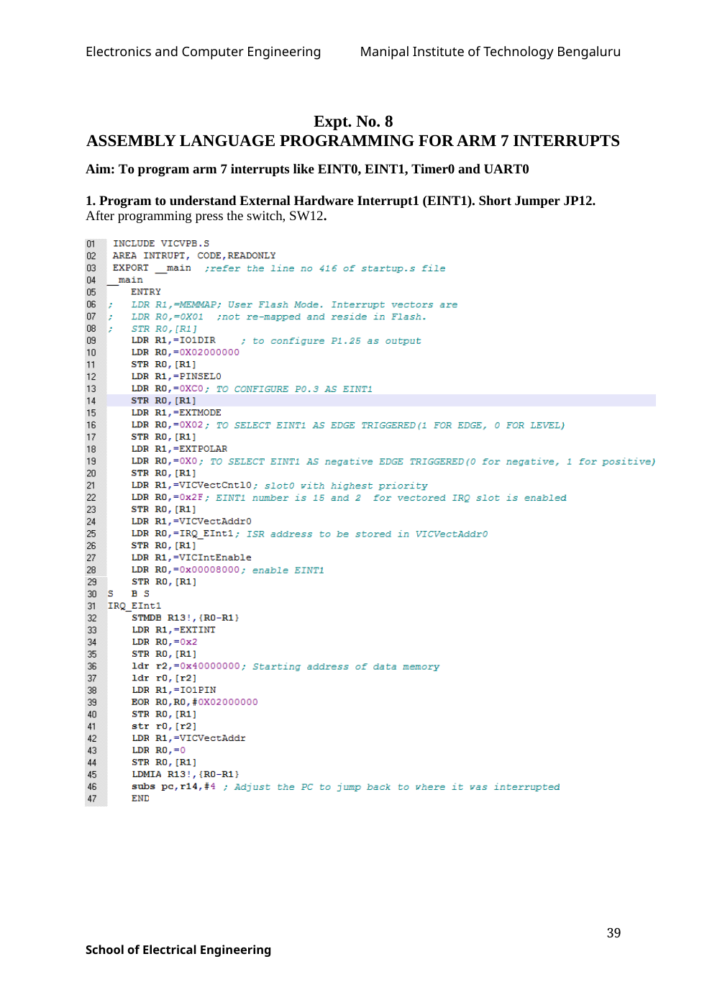

Copyable text transcription
OCR-generated from the original manual page. Check register names, labels, constants and punctuation against the reference image before using.
Electronics and Computer Engineering Manipal Institute of Technology Bengaluru
Expt. No. 8
ASSEMBLY LANGUAGE PROGRAMMING FOR ARM 7 INTERRUPTS
Aim: To program arm 7 interrupts like EINT0, EINT1, Timer? and UARTO
1. Program to understand External Hardware Interrupt1 (EINT1). Short Jumper JP12.
After programming press the switch, SW12.
i) ] INCLUDE VICVPB.S
02 AREA INTRUPT, CODE, READONLY
lie} EXPORT main ;refer the line no 416 of startup.s file
04 _ main
05 ENTRY
Oo ; LDR R1,=MEMMAP; User Flash Mode. Interrupt vectors are
OF ;: LDR RO,=O0OX01 ;not re-mapped and reside in Flash.
we -; STR RO,[Ri]
os LDR R1,=IO1DIR ¢ to configure P1.25 as output
10 LDR RO, =0X02000000
un STR RO, [R1]
12 LDR R1,=PINSELO
13 LDR RO,=OXCO; TO CONFIGURE P0.3 AS EINTIi
14 STR RO, (Ri)
15 LDR R1,=EXTMODE
16 LDR RO,=0X02; TO SELECT EINTi AS EDGE TRIGGERED(i FOR EDGE, 0 FOR LEVEL)
7 STR RO, [R1]
18 LDR R1i,=EXTPOLAR
19 LDR RO,=OX0; TO SELECT EINT1 AS negative EDGE TRIGGERED(O for negative, 1 for positive)
20 STR RO, [R1]
21 LDR R1,=VICVectCntl0; slotO with highest priority
22 LDR RO,=Ox2F; EINTi number is 15 and 2 for vectored IRO slot is enabled
ys} STR RO, [Ri]
24 LDR R1,=VICVectAddroO
3 LDR RO,=IRQ_EInti; ISR address to be stored in VICVectAddro
v2) STR RO, [R1]
2 LDR R1i,=VICIntEnable
28 LDR RO,=0x00008000; enable EINT1
2 STR RO, [R1]
3 6S BS
31 «IRQ _EInti
32 STMDB R13!, {RO-R1}
33 LDR R1,=EXTINT
| LDR RO,=0x2
Ss STR RO, (Ri)
36 ldr r2,=0x40000000; Starting address of data memory
F ldr r0, [r2]
ie: 2] LDR R1,=I01PIN
3 EOR RO,RO, #0X02000000
40 STR RO, [Ri]
41 str ro, [r2]
42 LDR R1,=ViICVectAddr
43 LDR RO,=0
44 STR RO, [R1]
45 LDMIA R13!, {RO-R1}
46 subs pe,ri4,#4 ; Adjust the PC to jump back to where it vas interrupted
47 END
39
School of Electrical EngineeringView original manual page (reference)
